Sound gallery
Hear and see what each waveform and key control does. Each sample is an A3 held for two seconds, changing only what's named. Every spectrogram uses the same scale, so you can compare them directly.
Saw waveforms
The manual shows these as icons. All are the same note, with the filter open.
Saw. The full harmonic series, and the usual starting point.
Saw 2. The 2nd harmonic is strongest, so it sounds an octave up and hollow.
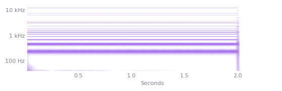
Saw PW. Shifts continuously with PWM. Blacktop uses it.
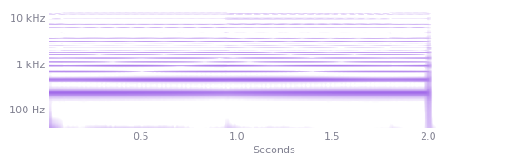
Saw 3. Top-heavy and buzzy, with the 8th harmonic strongest.
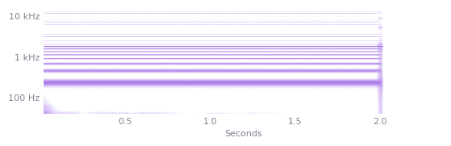
Saw 4. Strong peaks at the 2nd, 6th and 8th harmonics: bell-like. Glass Chime uses it.
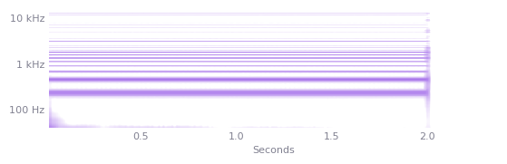
Pulse waveforms
Pulse positions can be retuned and synced separately from the saw.
Square. Odd harmonics only: hollow.
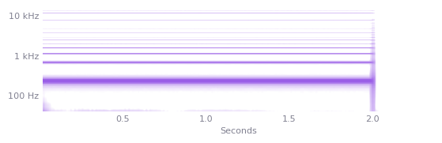
Pulse 25%. Nasal, with every 4th harmonic missing.
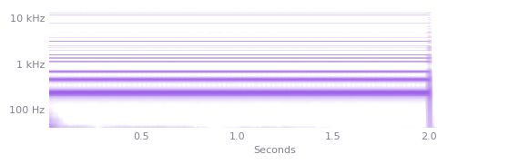
Pulse PW. The width moves, so the harmonics do too. This is the classic pad motion.
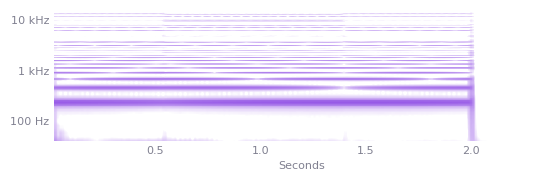
Saw position. The plain saw's harmonic series, but it can be retuned and synced separately.
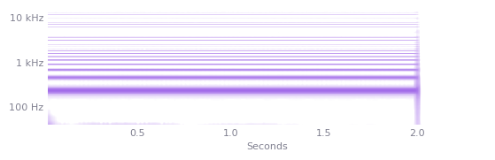
Sub oscillator
Alone at full level, played at A3. Only level 0 turns the sub off.
Square -1 oct. The panel labels this position OFF.
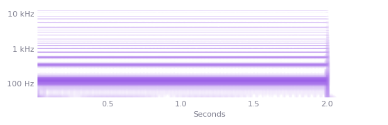
Pulse 25% -1 oct. Adds the octave above: more defined.
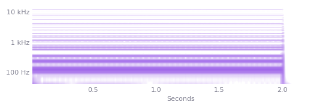
Mixed -1 oct. Strong upper partials: the brightest of the -1 octave positions.
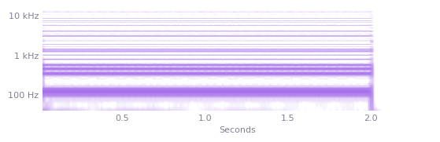
Bright square -1 oct. Odd harmonics only, like the square, but with stronger upper ones.
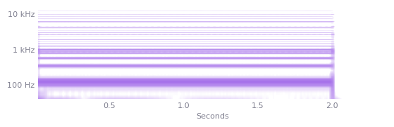
Square -2 oct. Very low: for higher notes, rather than bass.
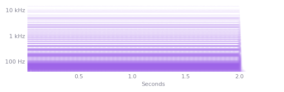
Pulse 25% -2 oct. Adds the octave above the sub, so it reads more clearly than the -2 octave square.
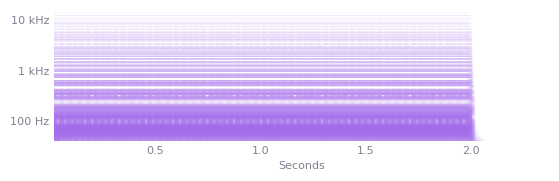
Resonance
A saw with the filter sweeping. Only the resonance changes.
Resonance 0. A smooth sweep.
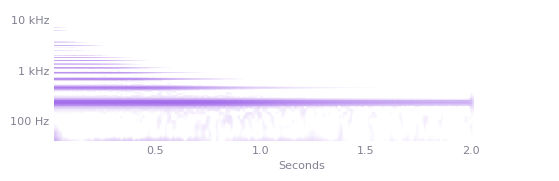
Resonance 4. A clear peak travels with the sweep.
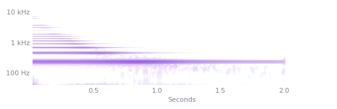
Resonance 8. Strongly vocal. The low end drops noticeably.
Resonance 8 + BOOST. A slightly stronger peak. Resonance goes higher still, and BOOST matters most at the top of its range.
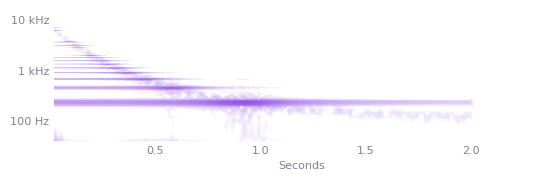
High-pass and bass boost
A saw, played low. The filter has four positions, and 'off' is the second.
Bass boost. A broad lift of about 6 dB up to 250 Hz.
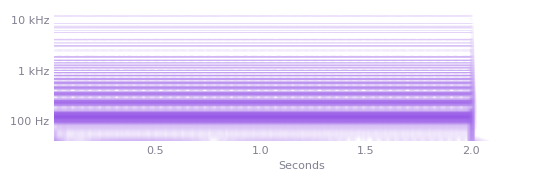
Bass boost + ALT. A tighter peak around 80 Hz.
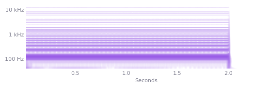
Off. Neutral.
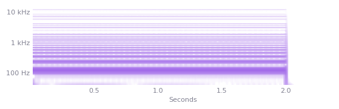
HP 1. A gentle low cut.
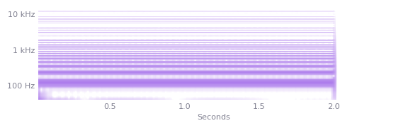
HP 2. A strong low cut, down 13 dB at 200 Hz.
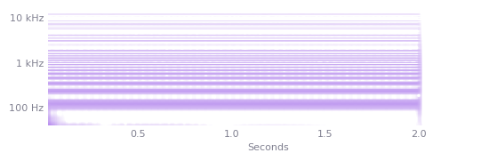
Chorus
A saw chord would mask the effect, so this is one note. Width isn't visible in a spectrogram: listen on headphones.
Chorus off. Dry and centred.
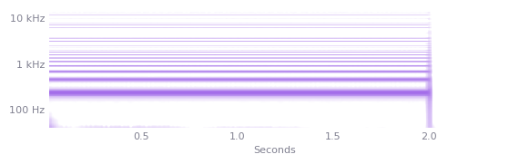
Chorus, slow. Gentle width.
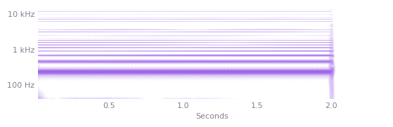
Chorus, fast. A quick shimmer: the string machine's trick.
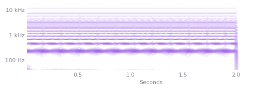
Unison
Detune 0.20 and spread 0.80. Each voice count is one note played on one key.
3 voices. A clear thickening.
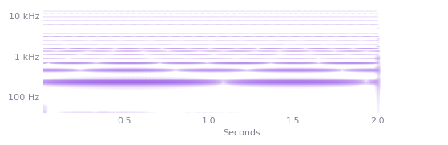
5 voices. A wall, with some loss of pitch focus.
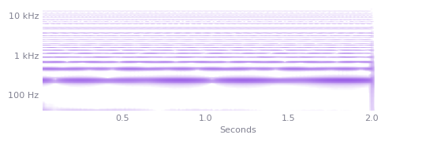
7 voices. The maximum.
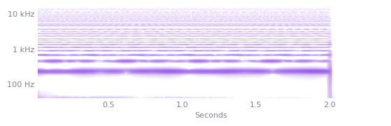
Envelope and VCA mode
The same filter sweep through the shared envelope, with a different amp mode.
VCA Normal. Amp and filter close together: a pluck.
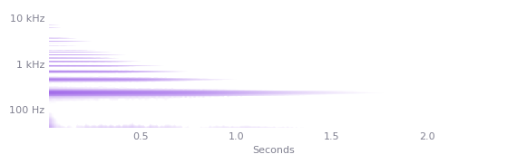
VCA Gate. The amp holds and only the filter closes: the note keeps its weight.
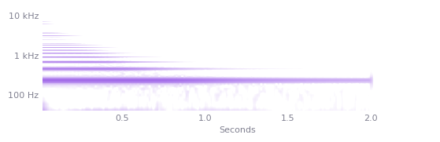